Assignment 1
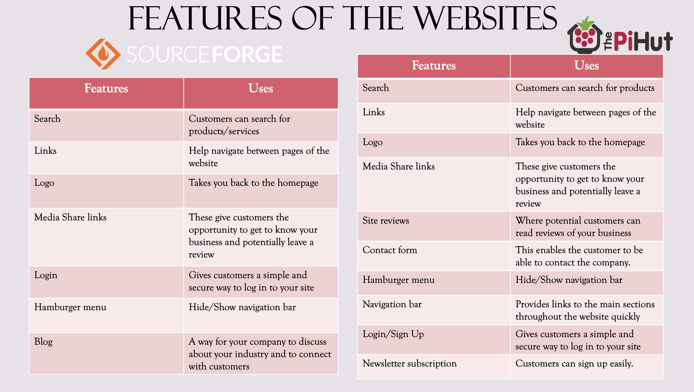
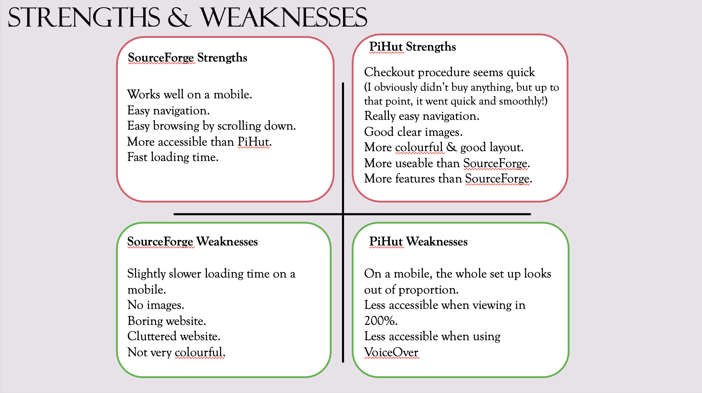
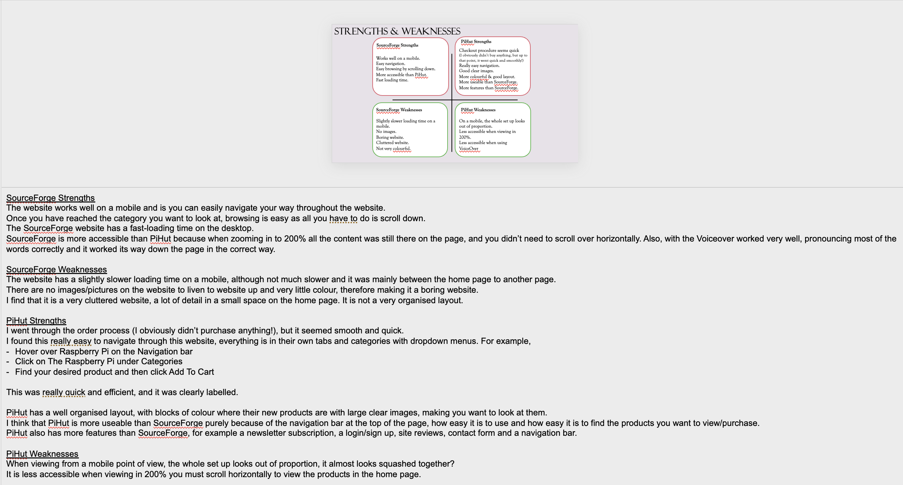
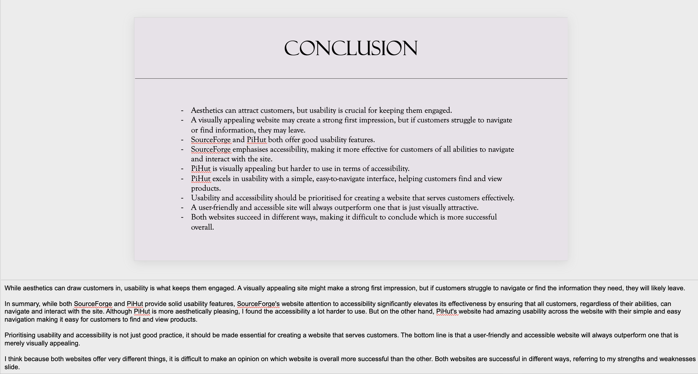
Task 1: The Uses and Features of Websites. The given websites for this assignment was: SourceForge & PiHut.
For Assignment 1 I had to investigate the two websites provided. I then had to explain the uses of th two websites and th intended
purpose of their features. I also had to discuss each of their strengths and weaknesses. After doing this research, I then had to create a presentation with a large amount of notes explaining the purpose, who pays for them and why. Also to include the features i.e. hot spots, email links
registration and logins, forms, accessibility, e-commerce facilities, aesthetics etc. I followed this up with a conclusion on the final page of my presentation.
I received a Distinction grade for this Assignment.
Assignment 2
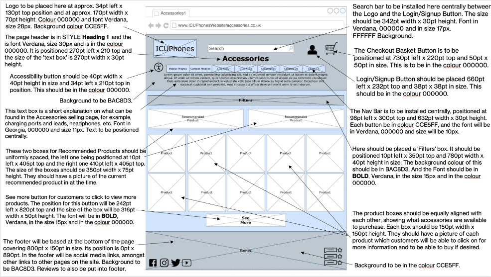
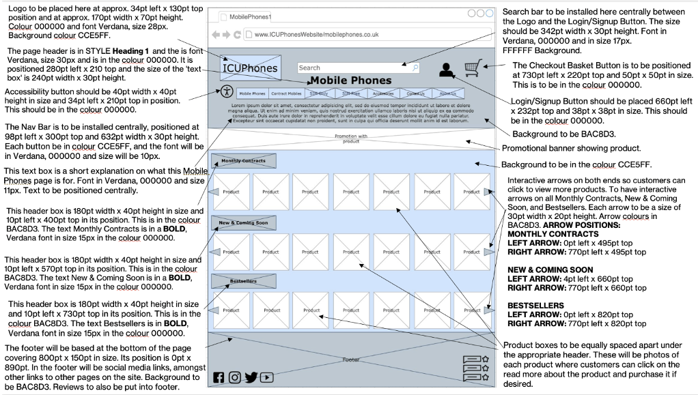
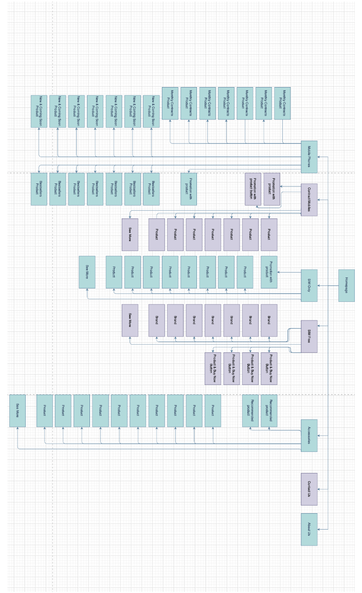
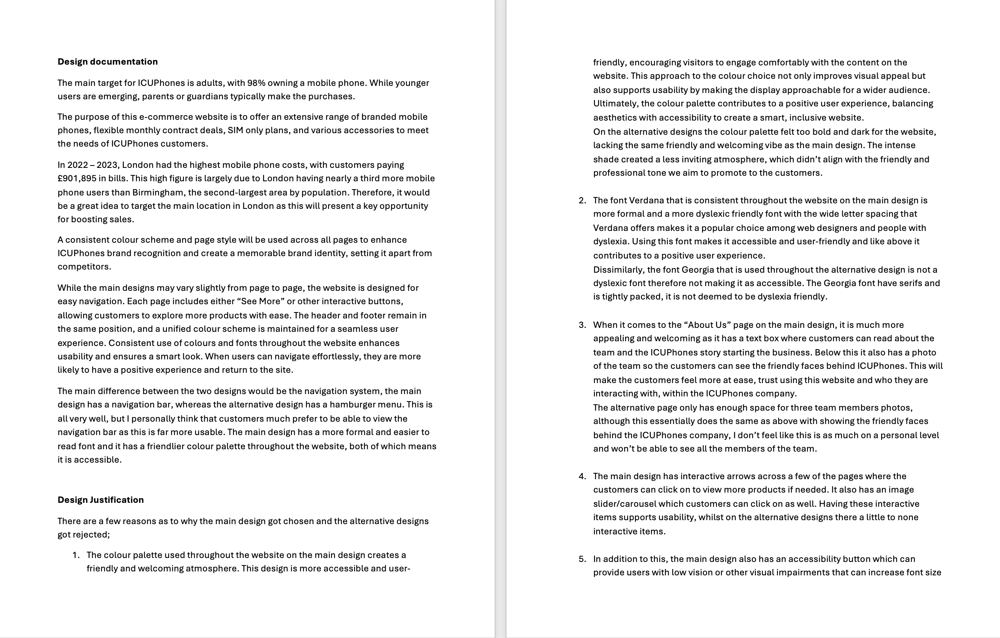
Task 2: Create a Design
For the second assignment I was asked to plan, design my website and justify my final design decisions.
My designs needed to include:
- 8 wireframes that outline the layout and content and describes the styles, typography, colours and interactive features that I will use.
- A sitemap and Folder structure
- Assets list
- A test plan describing the tests that will be used to check the functionality of the website.
- 8 Alternative designs
For the design documentation, I needed to provide a description of the requirements from the assignment brief and an explanation of the target audience and the intended purpose of the website.
I also needed to include a desciption of how colour schemes and page styles were applied consistently throughout the website and lastly a brief description of alternative designs for the intended website.
Once I had completed this, I had to justify my design decisons. To do this I had to explain why my alternative designs were rejected, explain how the website will fulful the intended
purpose and meet the user requirements and also consider the constraints, for example time and budget constraints and whether they will have an impact on developing the website.
I received a Distinction grade for this Assignment.
Assignment 3
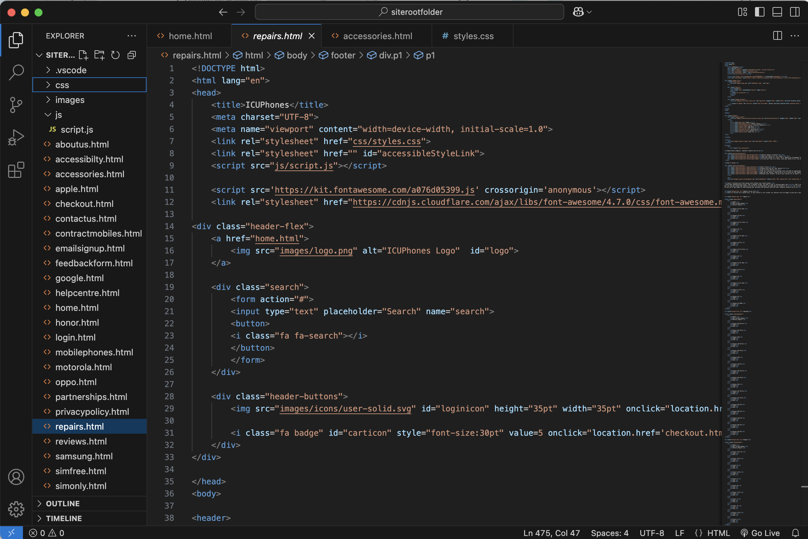
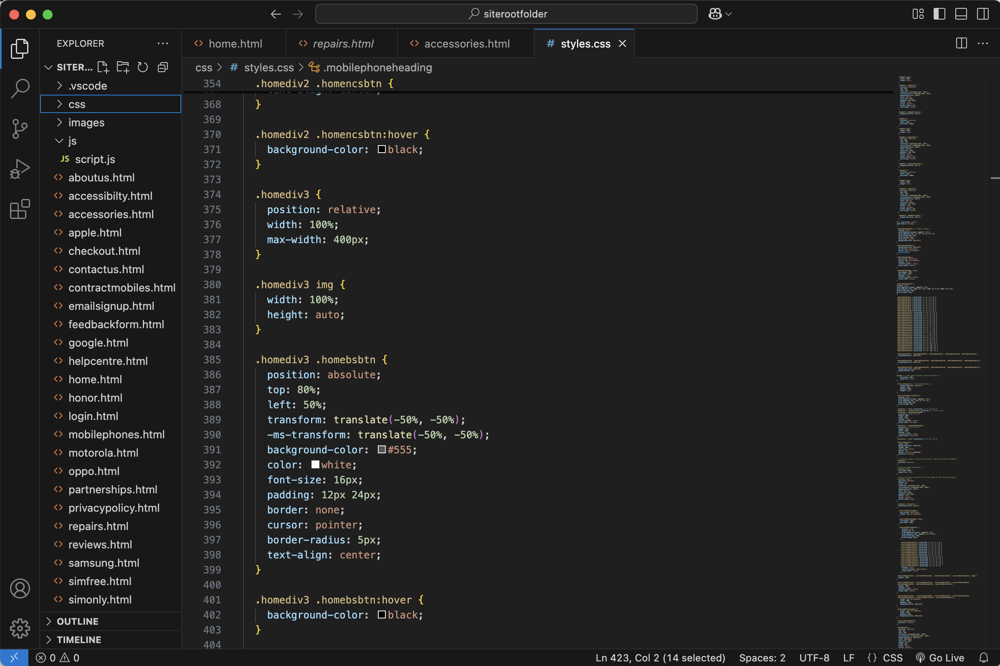
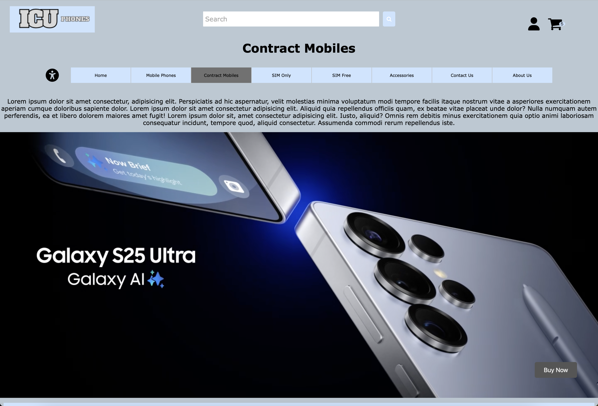
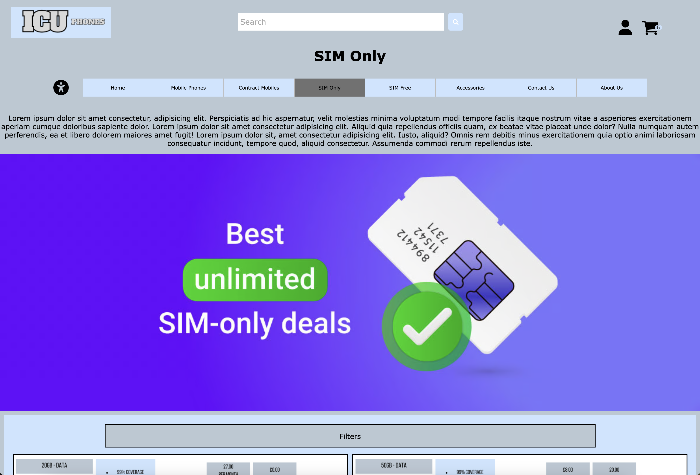
Task 3: Develop and test a website & Task 4: Review the finished website
For the third and fourth assignments, I designed, developed, tested and refined my website. To be able to do this I had to develop the website using my designs from Assignment 2, adding interactive features to the website using simple client-side scripts. I used Visual Studio Code to create my website. I had to prepare and update my assets list in my design and fully reference them.
When testing my website, I had to use my test plan that I created as part of the design process, test the functionality of the website, including and interactive features.
The evidence that I had to produce for this task was:
- Fully referenced assets list
- Digital copy of the webiste as a zipped file
- Brief explanation of the techniques that I used to meet the user requirements for a responsive design
- A test plan containing the outcome of the tests, including screenshots of interative features and details of any changes I had to make to resolve any issues/faults.
- A brief summary outlining the type and quantity of feedback received from test users and the client. The reasons for rejecting any feedback or a description of how I improved my site based on the user feedback I received, explaining what I have done and why.
When reviewing my finished website, it was time to evaluate the final product. I had to justify my design, explaining how it will meet its purpose and user requirements, justify any changes that were made during development and explain the rationale for these.
I had to gather feedback from at least one other person, I chose 4 people as this gave me enough feedback. I had to use the feedback to consider how suitable the product is and any constraints it suffers. I also needed to recommend three improvements, but didn't need to implement them.
I received a Distinction grade for this Assignment.